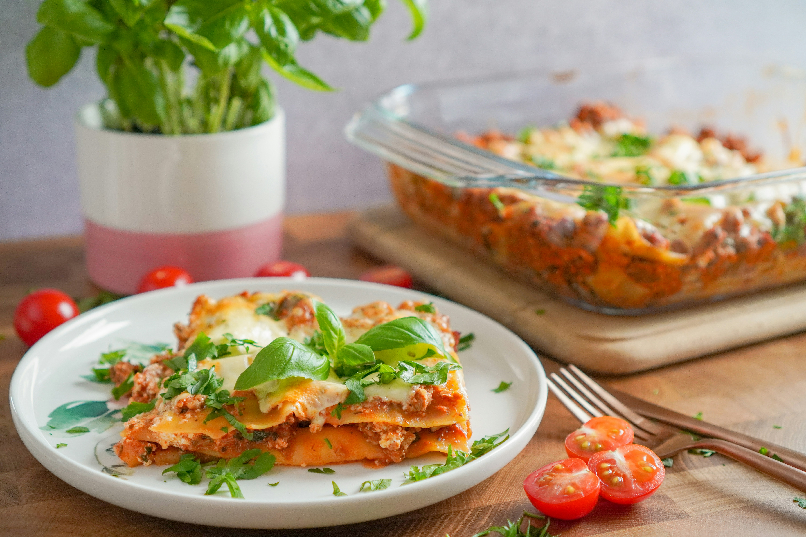

Home
Italian Lasagne

Tough but worth
Making lasagna can be time-consuming, but the results are well worth the wait.
You'll find a detailed ingredient list and step-by-step instructions in the recipe below,
but let's go over the basics:
You'll need:
- 500 g ground meat (beef or mixed)
- 1 onion
- 2 cloves of garlic
- 800 g tomato passata
- 2 tablespoons tomato paste
- 200 g lasagna noodles
- 500 ml milk
- 50 g butter
- 2 tablespoons all-purpose flour
- 150 g grated cheese (e.g., mozzarella, parmesan)
- Oregano, basil, salt, pepper to taste
- Olive oil
Let's do it:
- Fry the onion and garlic in olive oil, add the meat and cook until browned.
- Add the tomato passata, tomato paste, spices, and simmer over low heat for 15 minutes.
- Prepare the béchamel sauce: melt the butter, add the flour, then gradually pour in the milk, stirring until smooth.
- Spread a little meat sauce at the bottom of a baking dish and cover with lasagna noodles.
- Layer: meat sauce, béchamel, noodles — and repeat until all ingredients are used. Top with grated cheese.
- Bake in a preheated oven at 180°C (356°F) for about 40 minutes.
- Let rest for a few minutes before slicing and serving.